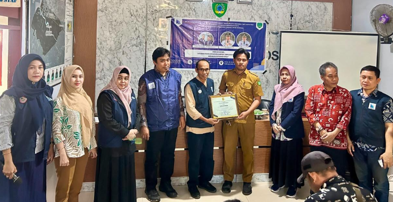
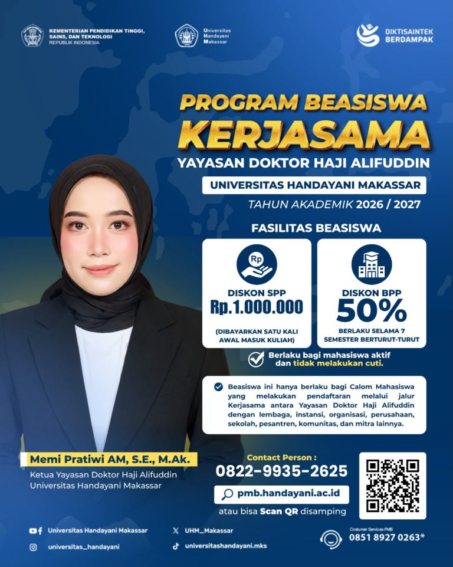
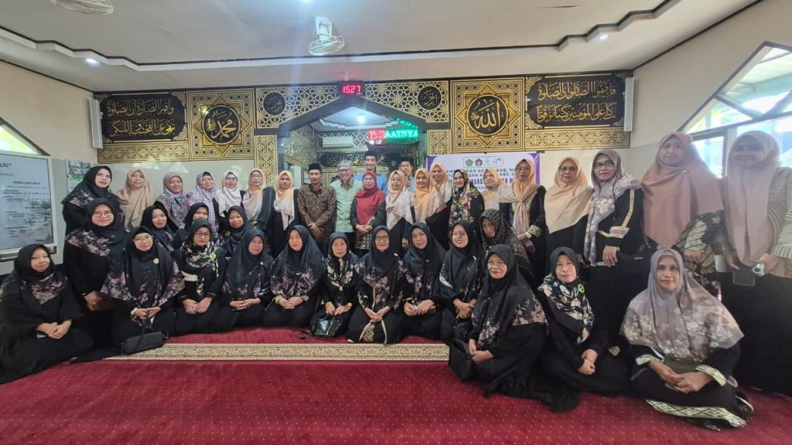
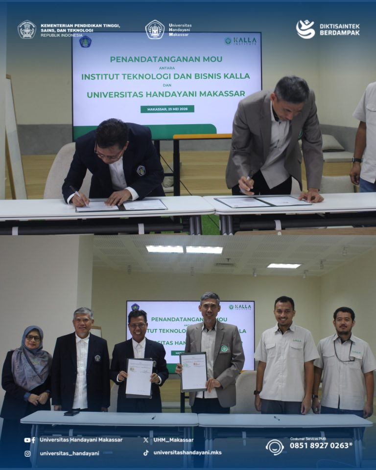

Ikuti informasi terbaru mengenai kegiatan Universitas Handayani Makassar.

Maros – Dosen Universitas Handayani Makassar kembali menunjukkan komitmennya dalam mengimplementasikan Tri Dharma Perguruan Tinggi melalui partisipasi pada Pengabdian kepada Masyarakat (PKM) Nasional ADPERTISI Tahun 2026 yang dilaksanakan di Desa Marannu, Kabupaten Maros.
Baca Selengkapnya
Makassar – Dalam upaya memperluas akses masyarakat terhadap pendidikan tinggi yang berkualitas, Universitas Handayani Makassar bersama Yayasan Doktor Haji Alifuddin kembali menghadirkan Program Beasiswa Kerja Sama Tahun Akademik 2026/2027.
Baca Selengkapnya
Maros, 11 Juni 2026 – Dalam upaya meningkatkan kapasitas masyarakat dalam menghadapi berbagai tantangan kehidupan keluarga di era digital, Universitas Handayani Makassar bekerja sama dengan Kantor Urusan Agama (KUA) Kecamatan Mandai menyelenggarakan kegiatan Pengabdian kepada Masyarakat (PKM) bertajuk “Capacity Building Literasi Keuangan dan Ketahanan Keluarga: Ikhtiar Mewujudkan Keluarga Sakinah Maslahat di Era Digital 4.0”.
Baca Selengkapnya
Makassar 26 Mei 2026 – Universitas Handayani Makassar (UHM) kembali memperluas jejaring kemitraan strategis melalui penandatanganan Memorandum of Understanding (MoU) bersama Institut Teknologi dan Bisnis (ITB) Kalla yang dilaksanakan pada Senin, 25 Mei 2026.
Baca Selengkapnya